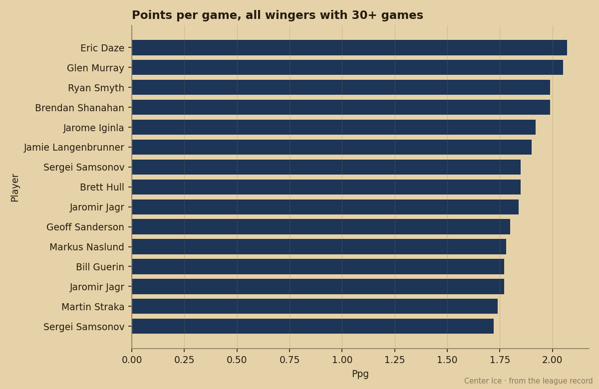
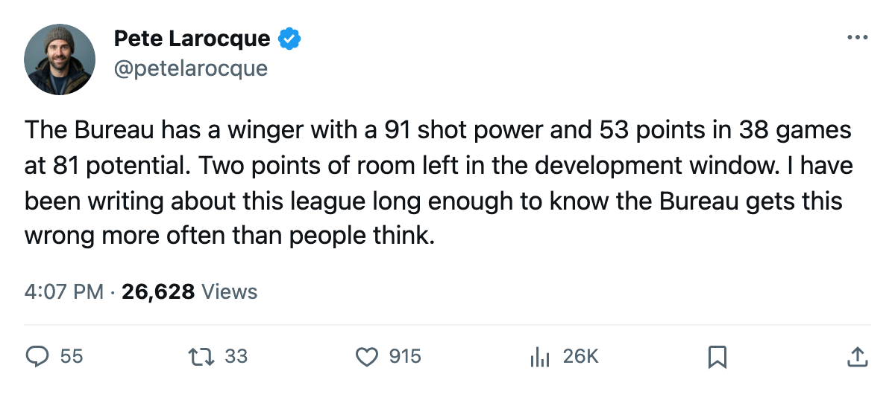
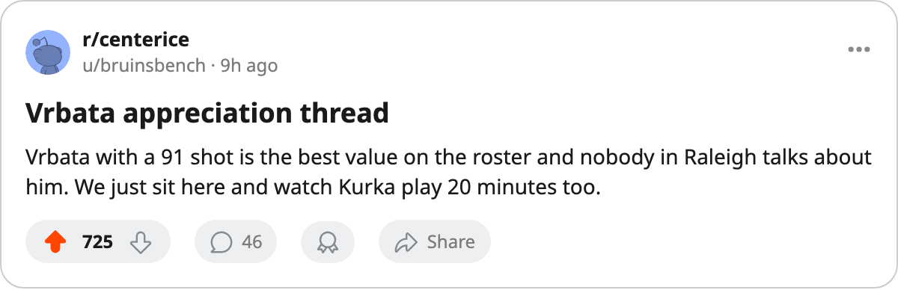

The 212th Pick Has a 91 Shot Power. The Book Gives Him 81 Potential.
Radim Vrbata is scoring at a pace no winger under 24 can match, on the cheapest contract in Carolina's lineup, in the final year of a deal the Bureau thinks is worth keeping.
 Pete LarocqueScouting editor · The Prospect File
Pete LarocqueScouting editor · The Prospect File
 Radim Vrbata73 went 212th in 1999. He has 53 points in 38 games this season, and the Bureau's Book puts his potential at 81.
Radim Vrbata73 went 212th in 1999. He has 53 points in 38 games this season, and the Bureau's Book puts his potential at 81.
That is the lowest potential grade I can find on any winger with 50 points in fewer than 45 games this year. The shot power reads 91. The puck handling reads 87. The accuracy reads 84. Those are the numbers a team pays top-of-the-lineup money for. The Book says he is already finished, and the Development Index has him at 0, flat.

The chart above shows the wingers currently producing at a faster points-per-game rate than Vrbata across all seasons on record. Every name on it is older than 23. Vrbata is the youngest player in the league putting up this kind of volume on this few games, and the Book has him below every first-rounder from the last 4 drafts except 3 men.
The injury cost him 31 of Carolina's games
A head injury put him out. The Bureau records the onset as sometime between Jan 1 and Jan 4, and the return date as Feb 13. He has played since.  Carolina Hurricanes has 69 games on the schedule; he is in 38 of them. The 31 games he missed are the reason his name does not appear in the Art Ross column.
Carolina Hurricanes has 69 games on the schedule; he is in 38 of them. The 31 games he missed are the reason his name does not appear in the Art Ross column.
In the games he has played, he has 24 goals. The 53 points come at 20.9 minutes a night on $0.40M, the final year of that deal. Carolina Hurricanes sits at 81 points in the Southeast, one spot back of  Washington Capitals, and Vrbata carries the biggest scoring total of any winger on the roster under 24.
Washington Capitals, and Vrbata carries the biggest scoring total of any winger on the roster under 24.
What the Book actually says about him
The overall grade is 79 today. The base grade the Bureau works from is 81. The Index is at 0, so the published number sits 2 below the base. Morale is 95. The 6 tool grades the Junior Bureau assigns are strong across the board: 91 shot power, 87 puck handling, 84 accuracy, 84 hands, 83 speed, 80 balance. The weaknesses are in the physical categories: 50 fight, 51 faceoffs, 53 injury resistance. None of those stop a winger from putting up 50 points in 38 games.
The potential figure is the one that bothers me. The Bureau says 81. That is 2 above his current overall. The formula the Book uses treats that as near the end of the development window. I have seen a 2-point gap before and watched the player stall. I have also seen it in a player who keeps improving and nobody notices until the next contract year.
| player | position | draft | overall | potential | gp | points | mpg |
|---|---|---|---|---|---|---|---|
| [[player:1047\|Radim Vrbata]] | RW | 1999 #212 (R8) | 79 | 81 | 38 | 53 | 20.9 |
| [[player:308\|Marian Gaborik]] | RW | 2000 #3 (R1) | 97 | 90 | 69 | 83 | 20.2 |
| [[player:373\|Martin Havlat]] | LW | 1999 #26 (R1) | 86 | 85 | 67 | 83 | 20.6 |
| [[player:52\|Mike Cammalleri]] | RW | 2001 #49 (R2) | 79 | 97 | 46 | 47 | 20.6 |
| [[player:266\|Martin Erat]] | LW | 1999 #191 (R7) | 80 | 85 | 64 | 47 | 20.8 |
 Gaborik99 and
Gaborik99 and  Havlat88 are the wingers whose point totals are closest to his when you adjust for games played, and they went 3rd and 26th.
Havlat88 are the wingers whose point totals are closest to his when you adjust for games played, and they went 3rd and 26th.  Cammalleri83 has 47 in 46 with a 97 potential and the Index at +6. Vrbata has 53 in 38 with an 81 potential and the Index at 0.
Cammalleri83 has 47 in 46 with a 97 potential and the Index at +6. Vrbata has 53 in 38 with an 81 potential and the Index at 0.
The contract year question
$0.40M buys a team a 91 shot power and 24 goals. When that deal expires, the market for wingers with those tools runs higher. The Bureau's 81 potential means they do not expect him to get better. But the Development Index is a measurement of the current season, and the current season has him at zero because he missed 6 weeks. He returned Feb 13. The Index updates every edition. If the next one reads +4 or +5 because he is back and scoring, the overall climbs, and the 81 potential looks like a number the Bureau should revisit.
I do not need the Book to be right about Radim Vrbata. I need it to be wrong about his potential and right about the rest. The 212th pick from 1999, playing 20.9 minutes in Raleigh on 40 cents a season, has the shot power of a man the Bureau thought was already finished.

